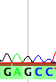
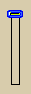
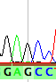
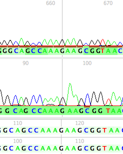
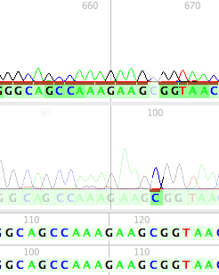
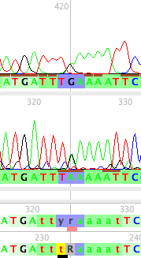
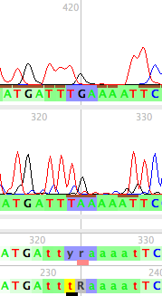
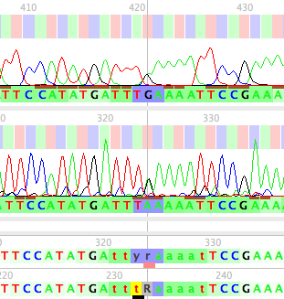
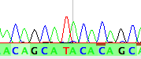
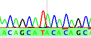

In the Chromatogram Viewer window, the following additional display options are available.
Changing the height of peaks
To change the height of peaks, use the control bar at the lower-left-hand corner of the Chromatogram Viewer window. For example, with the control set low, the peaks are low:
|  |
With the control set higher, the peaks will be drawn higher:
|  |  |
Graphically reversing or complementing sequences
To graphically reverse or complement the chromatograms, use the small toggles in the lower left hand side of the window:
| Forward view – a blue-boxed arrow pointing to the right indicates that all the chromatograms/sequences are shown in their forward direction. | |
| Reverse view – a yellow-boxed arrow pointing to the left indicates that the chromatograms/sequences are shown in their reverse direction. | |
| Complement off – a blue-boxed "C" indicates that the complements of chromatograms/sequences are not shown. | |
| Complement on – a yellow-boxed "C" indicates that the complements of the chromatograms/sequences are shown. |
These switches do not change the sequences as stored in the matrix or elsewhere; it is purely a graphical change.
Fading sites
Chromaseq can fade entire sections of reads so that you can focus on the most important reads. Turn on fading by choosing Show Fades from the Chromatograms menu
- Fade Low Quality. This will fade all sites in all reads whose bases are below a certain quality threshold at the site. You can set the threshold value in the Chromatograms>Fade Quality Threshold menu item.
- Fade Non-Source Read. This will fade out non-source reads so that you can more easily see which read is the source read.
- Fade Non-Source Lower-Quality Reads. The sites that will be then shown unfaded will be those that are source reads, or non-source reads that are higher-quality than the source reads.
For example, if you choose to fade non-source reads, it will appear similar to that shown on the right:
|  |  |
Non-source bases not faded |
Non-source bases faded |
The Show Submenu
The Show submenu of the Chromatograms menu allows you to choose many options that you can show or not. For example, you can choose to hide all A's by turning off A Trace:
 Showing all traces |
 A Trace turned off |
Show Codon Positions

Other options
Color Calls By Quality submenu: The various options in this submenu toggle whether the base calls are shaded according to phred/phrap quality scores, using the standard quality score color scheme.
Thick Trace Lines: Toggles the thickness of the chromatogram trace lines.
 Thin trace lines |
 Thick trace lines |